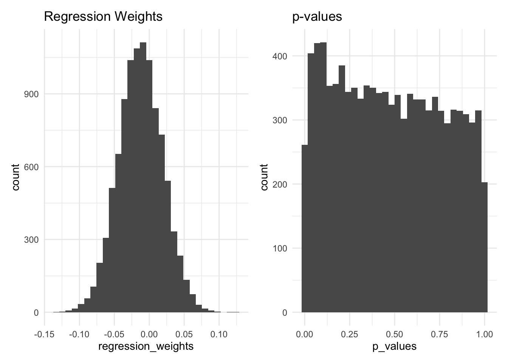

flowchart LR A1[Absentism₁] --> A2[Absentism₂] L1[Screentime₁] --> L2[Screentime₂] C[Depressiveness] --> A1 C[Depressiveness] --> A2 C[Depressiveness] --> L1 C[Depressiveness] --> L2
Confounding
Simulation of a Regression Analysis
Data Generating Mechanism
Let’s assume, we have a time invariant confounder \(Depressiveness\) which affects two variables assessed at two time points \(Absentism_{1}\), \(Absentism_{2}\), \(Screentime_{1}\), \(Screentime_{2}\).
Note: We assume no effects of \(Absentism_1\) on \(Screentime_2\) and of \(Screentime_1\) on \(Absentism_2\).
Simulate Data
library(tidyverse)
set.seed(2705)
n <- 1000
# Simulate confounder
data <- tibble(
# Start with a purly independent variable
Depressiveness = rnorm(n, mean = 0, sd = 1),
# Add the two variables that are dependent on the confounder
Absentism_1 = rnorm(n, mean = 0, sd = 1) + .25 * Depressiveness,
Screentime_1 = rnorm(n, mean = 0, sd = 1) + .25 * Depressiveness,
# Add the two variables that are dependent on the confounder and on each other
Absentism_2 = rnorm(n, mean = 0, sd = 1) + .25 * Depressiveness + .5*Absentism_1,
Screentime_2 = rnorm(n, mean = 0, sd = 1) + .25 * Depressiveness + .5*Screentime_1,
)Regression Analysis
If we have data for the confounder simple multiple regression does the job of uncovering the confounding:
library(sjPlot)Warning: package 'sjPlot' was built under R version 4.4.1#refugeeswelcometab_model(
lm(Absentism_2 ~ Screentime_1, data = data),
lm(Absentism_2 ~ Depressiveness, data = data),
lm(Absentism_2 ~ Screentime_1 + Depressiveness, data = data),
show.ci = F,
show.std = T
)| Absentism_2 | Absentism_2 | Absentism_2 | |||||||
| Predictors | Estimates | std. Beta | p | Estimates | std. Beta | p | Estimates | std. Beta | p |
| (Intercept) | -0.00 | 0.00 | 0.921 | -0.01 | 0.00 | 0.841 | -0.01 | 0.00 | 0.822 |
| Screentime 1 | 0.12 | 0.11 | 0.001 | 0.04 | 0.04 | 0.188 | |||
| Depressiveness | 0.37 | 0.31 | <0.001 | 0.36 | 0.30 | <0.001 | |||
| Observations | 1000 | 1000 | 1000 | ||||||
| R2 / R2 adjusted | 0.012 / 0.011 | 0.094 / 0.093 | 0.095 / 0.093 | ||||||
But what if we do not have data for the confounder? De-meaning/person-centering will help:
data <- data %>%
mutate(
Absentism_1_pc = Absentism_1 - rowMeans(pick(Absentism_1, Absentism_2)),
Absentism_2_pc = Absentism_2 - rowMeans(pick(Absentism_1, Absentism_2)),
Screentime_1_pc = Screentime_1 - rowMeans(pick(Screentime_1, Screentime_2)),
Screentime_2_pc = Screentime_2 - rowMeans(pick(Screentime_1, Screentime_2))
)
tab_model(
lm(Absentism_2_pc ~ Screentime_1_pc, data = data),
show.ci = F,
show.std = T
)| Absentism_2_pc | |||
| Predictors | Estimates | std. Beta | p |
| (Intercept) | 0.00 | -0.00 | 0.845 |
| Screentime 1 pc | -0.03 | -0.03 | 0.388 |
| Observations | 1000 | ||
| R2 / R2 adjusted | 0.001 / -0.000 | ||
But how does this work? Maybe the following worked out example will help you to build an intuition:
{kind=link}
Monte Carlo Simulation
Simulate Data and Rerun Analyses
If you change the seed above and run the code again you will see that the results of the regression analysis change and even the p-values become significant sometimes. To test if the adjustment for Depressiveness_₁ works on avergage a Monte Carlo Simulation can be used:
library(broom)Warning: package 'broom' was built under R version 4.4.1# initiate two empty vector to store the results (p-value and regression weight)
b_depressiveness <- numeric(0)
p_depressiveness <- numeric(0)
# now run the Monte Carlo Simulation by repeating the data simulation and
# regression analysis 10000 times (takes a minute) and store the results each time
for (i in 1:10000){
# Simulate confounder
data_i <-
tibble(
Depressiveness = rnorm(n, mean = 0, sd = 1),
Absentism_1 = rnorm(n, mean = 0, sd = 1) + .25 * Depressiveness,
Screentime_1 = rnorm(n, mean = 0, sd = 1) + .25 * Depressiveness,
Absentism_2 = rnorm(n, mean = 0, sd = 1) + .25 * Depressiveness + .5*Absentism_1,
Screentime_2 = rnorm(n, mean = 0, sd = 1) + .25 * Depressiveness + .5*Screentime_1)%>%
mutate(
Absentism_1_pc = Absentism_1 - rowMeans(pick(Absentism_1, Absentism_2)),
Absentism_2_pc = Absentism_2 - rowMeans(pick(Absentism_1, Absentism_2)),
Screentime_1_pc = Screentime_1 - rowMeans(pick(Screentime_1, Screentime_2)),
Screentime_2_pc = Screentime_2 - rowMeans(pick(Screentime_1, Screentime_2))
)
mod_i <- lm(Absentism_2_pc ~ Screentime_1_pc, data = data_i)
b_depressiveness[i] <-
tidy(mod_i) %>%
filter(term == "Screentime_1_pc") %>%
pull("estimate") %>%
as.numeric()
p_depressiveness[i] <-
tidy(mod_i) %>%
filter(term == "Screentime_1_pc") %>%
pull("p.value")
}Plot the results
library(patchwork)Warning: package 'patchwork' was built under R version 4.4.1tibble(regression_weights = b_depressiveness) %>%
ggplot(aes(regression_weights)) +
geom_histogram() +
theme_minimal() +
ggtitle("Regression Weights") +
tibble(p_values = p_depressiveness) %>%
ggplot(aes(p_values)) +
geom_histogram() +
theme_minimal() +
ggtitle("p-values")`stat_bin()` using `bins = 30`. Pick better value with `binwidth`.
`stat_bin()` using `bins = 30`. Pick better value with `binwidth`.